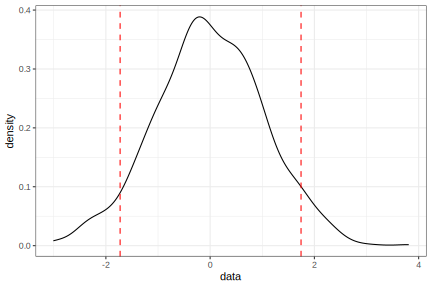

library(tidymodels)
tidymodels_prefer()
set.seed(1)
reference_data <- tibble(data = rnorm(1000))
reference_data %>%
ggplot(aes(x = data)) +
geom_line(stat = "density")
The probably package has functions to create prediction intervals for regression models.
To use code in this article, you will need to install the following packages: nnet, probably, and tidymodels. The probably package should be version 1.0.2 or greater.
What is conformal inference? It is a collection of statistical methods that are mostly used to construct prediction intervals (or prediction sets) for any type of regression or classification model. The basic idea revolves around some Frequentist theory on how to construct probability statements about whether a new sample could have been from an existing reference distribution.
Since this article is focused on regression problems, we’ll motivate the methodology in the context of a numeric outcome. For example, suppose we have collected a set of 1,000 standard normal data points.
library(tidymodels)
tidymodels_prefer()
set.seed(1)
reference_data <- tibble(data = rnorm(1000))
reference_data %>%
ggplot(aes(x = data)) +
geom_line(stat = "density")
If we had a new observation that we thought might be from the same distribution, how would we say (probabilistically) whether we believe that it belongs to the original distribution?
If we thought that 1,000 were a sufficient sample size, we might compute some quantiles of these data to define “the mainstream of the data.” Let’s use the 5th and 95th quantiles to set boundaries that define what we would expect to see most of the time:
quants <- quantile(reference_data$data, probs = c(0.05, 0.95))
reference_data %>%
ggplot(aes(x = data)) +
geom_line(stat = "density") +
geom_vline(xintercept = quants, col = "red", lty = 2)
If we were to get a new sample beyond these boundaries, we would be able to say that we are about 90% sure that the new sample does not conform to the original distribution. This works under the assumption that the data are exchangeable.
We can apply this relatively simple idea to model predictions. Suppose we have a model created on a numeric outcome. If we make predictions on a data set we can compute the model residuals and create a sort of reference error distribution. If we compute a prediction on a new unknown sample, we could center this reference distribution around its predicted value. For some significance level, we now know the range of sample values that “conform” to the variance seen in the reference distribution. That range can define our prediction interval.
There are a variety of ways to apply this concept (which is unsurprisingly more complex than the above description). The probably package has implemented a few of these.
Let’s make a simple example to illustrate the results. We’ll simulate a data set with a single predictor along with some unknown samples:
make_data <- function(n, std_dev = 1 / 5) {
tibble(x = runif(n, min = -1)) %>%
mutate(
y = (x^3) + 2 * exp(-6 * (x - 0.3)^2),
y = y + rnorm(n, sd = std_dev)
)
}
n <- 1000
set.seed(8383)
train_data <- make_data(n)
train_data %>%
ggplot(aes(x, y)) +
geom_point(alpha = 1 / 10)
We’ll use these data as a training set and fit a model:
set.seed(484)
nnet_wflow <-
workflow(y ~ x, mlp(hidden_units = 4) %>% set_mode("regression"))
nnet_fit <- nnet_wflow %>% fit(train_data)
nnet_pred <- augment(nnet_fit, train_data)
train_data %>%
ggplot(aes(x)) +
geom_point(aes(y = y), alpha = 1 / 10) +
geom_line(data = nnet_pred, aes(y = .pred),
linewidth = 1, col = "blue")
Let’s examine three methods1 to produce prediction intervals:
The most straightforward approach is reserving some data for estimating the residual distribution. We know that simply re-predicting the training set is a bad idea; the residuals would be smaller than they should be since the same data are used to create and evaluate the model.
Let’s simulate another data set containing 250 samples and call that the “calibration set”. These data can be predicted and the corresponding residuals can be used to define what conforms to the model. We’ll also create a large test set to see if we’ve done a good job.
set.seed(7292)
cal_data <- make_data(250)
test_data <- make_data(10000)The probably package has a set of functions with the prefix int_conformal that can be used to create prediction intervals. One is:
split_int <- int_conformal_split(nnet_fit, cal_data)
split_int
#> Split Conformal inference
#> preprocessor: formula
#> model: mlp (engine = nnet)
#> calibration set size: 250
#>
#> Use `predict(object, new_data, level)` to compute prediction intervalsTo get predictions on new data, we use the standard predict() method on this object:
# Produce 90% prediction intervals
test_split_res <-
predict(split_int, test_data, level = 0.90) %>%
bind_cols(test_data)
test_split_res %>% slice(1:5)
#> # A tibble: 5 × 5
#> .pred .pred_lower .pred_upper x y
#> <dbl> <dbl> <dbl> <dbl> <dbl>
#> 1 1.30 0.933 1.67 0.621 1.17
#> 2 -0.298 -0.665 0.0692 -0.658 -0.302
#> 3 0.133 -0.234 0.501 -0.329 0.0970
#> 4 1.33 0.964 1.70 0.611 1.21
#> 5 1.24 0.873 1.61 0.0145 1.22The results:

Since we know the outcome values, we can compute the coverage for this particular data set. Since we created a 90% prediction interval, about 90% of the outcomes should be within our bounds. Let’s create a function and apply it to these data:
coverage <- function(x) {
x %>%
mutate(in_bound = .pred_lower <= y & .pred_upper >= y) %>%
summarise(coverage = mean(in_bound) * 100)
}
coverage(test_split_res)
#> # A tibble: 1 × 1
#> coverage
#> <dbl>
#> 1 93.0In a way, the calibration set serves a similar role as a traditional validation set. Since we can’t just re-predict our training set, we need to evaluate our model on a separate collection of labeled data.
However, we also know that resampling methods can serve the same purpose. During resampling, we can compute a set of predictions that were not used to fit the model. For example, in 10-fold cross-validation, there are 10 collections of held-out predictions that do not suffer from the severe bias that occurs when we simple re-predict the training set.
The CV+ estimator (Barber et al. (2021)) can be used to assemble a reference distribution of residuals. If we use fit_resamples() or one of the tune_*() functions, we can gather those residuals and use them to create prediction intervals. We’ll have to make sure that we save the out-of-sample predictions as well as the resasmpled models.
The control_*() functions can be used for this purpose. We can set save_pred = TRUE to save the predicted values. For the resampled models, we can use the tools to extract the models via the extract argument. We’ll use the I() function to return the fitted workflows from each resample:
ctrl <- control_resamples(save_pred = TRUE, extract = I)Let’s use 10-fold cross-validation to resample the neural network:
set.seed(493)
folds <- vfold_cv(train_data)
nnet_rs <-
nnet_wflow %>%
fit_resamples(folds, control = ctrl)
collect_metrics(nnet_rs)
#> # A tibble: 2 × 6
#> .metric .estimator mean n std_err .config
#> <chr> <chr> <dbl> <int> <dbl> <chr>
#> 1 rmse standard 0.201 10 0.00524 Preprocessor1_Model1
#> 2 rsq standard 0.950 10 0.00447 Preprocessor1_Model1The model has an estimated root mean squared error of 0.201 and an estimated R2 of 0.95.
We can create another object for computing the intervals:
cv_int <- int_conformal_cv(nnet_rs)
cv_int
#> Conformal inference via CV+
#> preprocessor: formula
#> model: mlp (engine = nnet)
#> number of models: 10
#> training set size: 1,000
#>
#> Use `predict(object, new_data, level)` to compute prediction intervals
# Produce 90% prediction intervals
test_cv_res <-
predict(cv_int, test_data, level = 0.90) %>%
bind_cols(test_data)
test_cv_res %>% slice(1:5)
#> # A tibble: 5 × 5
#> .pred_lower .pred .pred_upper x y
#> <dbl> <dbl> <dbl> <dbl> <dbl>
#> 1 0.964 1.29 1.62 0.621 1.17
#> 2 -0.640 -0.311 0.0177 -0.658 -0.302
#> 3 -0.184 0.145 0.474 -0.329 0.0970
#> 4 0.992 1.32 1.65 0.611 1.21
#> 5 0.896 1.23 1.55 0.0145 1.22The results for this method are:

At each point, the interval length is 0.66; the previous split conformal interval width was 0.73. This is due to the training set being larger than the calibration set.
Note that the coverage is a little better since it is near 90%:
coverage(test_cv_res)
#> # A tibble: 1 × 1
#> coverage
#> <dbl>
#> 1 89.6The simulated data that we’ve been using has a constant error variance. That has worked for the two methods shown since their intervals are always the same width. Real data does not always have constant variation.
To demonstrate, we can take the previous simulation system and induce a variance that is dynamic over the predictor range:
make_variable_data <- function(n, std_dev = 1 / 5) {
tibble(x = runif(n, min = -1)) %>%
mutate(
y = (x^3) + 2 * exp(-6 * (x - 0.3)^2),
y = y + rnorm(n, sd = std_dev * abs(x))
)
}
make_variable_data(1000) %>%
ggplot(aes(x, y)) +
geom_point(alpha = 1 / 5)
Let’s create new data sets and re-fit our model:
set.seed(7292)
train_variable_data <- make_variable_data(n)
cal_variable_data <- make_variable_data(250)
test_variable_data <- make_variable_data(10000)
nnet_variable_fit <- nnet_wflow %>% fit(train_variable_data)
nnet_variable_pred <- augment(nnet_variable_fit, train_variable_data)We can recreate the CV+ interval for this new version of the data:

The average coverage is good:
coverage(test_cv_variable_res)
#> # A tibble: 1 × 1
#> coverage
#> <dbl>
#> 1 90.3However, there are obvious areas where it is either too wide or too narrow.
Conformalized quantile regression (Romano et al (2019)) is a method to produce intervals that can properly scale the intervals based on what was observed in the training data. It fits an initial quantile regression model to do so and also required a split data set, such as our calibration data.
The original work used basic quantile regression models. For tidymodels, we’ll use quantile regression forests. The reason being that some models require nonlinear terms, interactions, and other features to model the data adequately. Users would have to have a parallel modeling process for that model. Random forests for quantile regression are very adaptable, low maintenance, and are robust to tuning parameter specification. There are both minor and major downsides, as seen below.
The function for this, int_conformal_quantile(), has a slightly different interface than the previous functions:
We’ll also pass an argument to the quantregForest() function that we’ll use 2,000 trees to make the forest:
quant_int <-
int_conformal_quantile(
nnet_variable_fit,
train_data = train_variable_data,
cal_data = cal_variable_data,
level = 0.90,
ntree = 2000)
quant_int
#> Split Conformal inference via Quantile Regression
#> preprocessor: formula
#> model: mlp (engine = nnet)
#> calibration set size: 250
#> confidence level: 0.9
#>
#> Use `predict(object, new_data)` to compute prediction intervals
test_quant_res <-
predict(quant_int, test_variable_data) %>%
bind_cols(test_variable_data)
test_quant_res %>% slice(1:5)
#> # A tibble: 5 × 5
#> .pred .pred_lower .pred_upper x y
#> <dbl> <dbl> <dbl> <dbl> <dbl>
#> 1 0.992 0.574 1.14 0.776 1.10
#> 2 -0.329 -0.546 -0.0904 -0.686 -0.180
#> 3 0.269 0.161 0.459 -0.274 0.364
#> 4 1.01 0.666 1.13 0.759 1.21
#> 5 2.00 1.90 2.12 0.367 1.87The results:

Minor downside: The bumpiness of the bound is the consequence of using a tree-based model for the quantiles.
Despite that, the intervals do adapt their widths to suit the data. The coverage is also close to the target:
coverage(test_quant_res)
#> # A tibble: 1 × 1
#> coverage
#> <dbl>
#> 1 92.0When our predictions are extrapolating, the intervals can be very poor. Tree-based models can behave very differently than other models when predicting beyond the training set; they follow a static trend even as the predictor values move towards infinity.
To illustrate this, we can simulate another point outside of the training set range:

The neural network does fairly well but the quantile regression forest carries the same extract trend forward. In this case, the interval doesn’t even include the predicted value (since two different models are used to compute both quantities).
To protect against this, we suggest using the tools in the applicable package. It can help quantify how much a prediction is outside of the mainstream of the training set.
Speaking of coverage, there’s a GitHub repo where we did simulations for these methods to determine their average coverage. The repository’s readme file has a summary.
If you are interested and would like to learn more, try these resources:
awesome-conformal-prediction on GitHub.#> ─ Session info ─────────────────────────────────────────────────────
#> setting value
#> version R version 4.4.2 (2024-10-31)
#> os macOS Sequoia 15.3.1
#> system aarch64, darwin20
#> ui X11
#> language (EN)
#> collate en_US.UTF-8
#> ctype en_US.UTF-8
#> tz America/Los_Angeles
#> date 2025-03-19
#> pandoc 3.6.1 @ /usr/local/bin/ (via rmarkdown)
#> quarto 1.6.42 @ /Applications/quarto/bin/quarto
#>
#> ─ Packages ─────────────────────────────────────────────────────────
#> package * version date (UTC) lib source
#> broom * 1.0.7 2024-09-26 [1] CRAN (R 4.4.1)
#> dials * 1.4.0 2025-02-13 [1] CRAN (R 4.4.2)
#> dplyr * 1.1.4 2023-11-17 [1] CRAN (R 4.4.0)
#> ggplot2 * 3.5.1 2024-04-23 [1] CRAN (R 4.4.0)
#> infer * 1.0.7 2024-03-25 [1] CRAN (R 4.4.0)
#> nnet 7.3-20 2025-01-01 [1] CRAN (R 4.4.1)
#> parsnip * 1.3.1 2025-03-12 [1] CRAN (R 4.4.1)
#> probably * 1.0.3 2024-02-23 [1] CRAN (R 4.4.0)
#> purrr * 1.0.4 2025-02-05 [1] CRAN (R 4.4.1)
#> recipes * 1.2.0 2025-03-17 [1] CRAN (R 4.4.1)
#> rlang 1.1.5 2025-01-17 [1] CRAN (R 4.4.2)
#> rsample * 1.2.1 2024-03-25 [1] CRAN (R 4.4.0)
#> tibble * 3.2.1 2023-03-20 [1] CRAN (R 4.4.0)
#> tidymodels * 1.3.0 2025-02-21 [1] CRAN (R 4.4.1)
#> tune * 1.3.0 2025-02-21 [1] CRAN (R 4.4.1)
#> workflows * 1.2.0 2025-02-19 [1] CRAN (R 4.4.1)
#> yardstick * 1.3.2 2025-01-22 [1] CRAN (R 4.4.1)
#>
#> [1] /Users/emilhvitfeldt/Library/R/arm64/4.4/library
#> [2] /Library/Frameworks/R.framework/Versions/4.4-arm64/Resources/library
#> * ── Packages attached to the search path.
#>
#> ────────────────────────────────────────────────────────────────────A fourth method is implemented for “full conformal prediction.” It was developed mainly as a proof of concept. While it is effective, it is very computationally expensive.↩︎